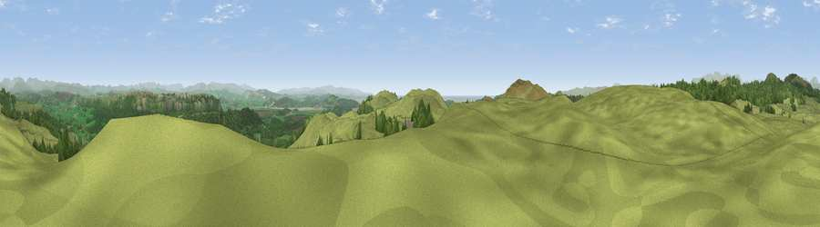

Viewpoint near High Newton
#2970 in England · top 16% of its area beats it · near High NewtonThe view, rendered

A 360° render of this exact spot computed from the terrain model, tree cover and land cover — summer colours, afternoon light, calibrated against photographs of famous viewpoints. Real trees, hedges and buildings will differ in detail.
The panorama
Grey silhouette: terrain skyline in each direction (720 bearings, Earth curvature and refraction included). Dashed green: skyline with trees (+15 m) and buildings (+8 m) as obstacles. Blue strip: how far the ground is visible on each bearing.
Where the view opens
Wedge length = distance to the farthest visible ground on that bearing (vegetation-aware). Rings at 10, 25 and 50 km.
What fills the view
75% grassland · 24% woodland ·
Angular shares of the visible panorama (visual magnitude), not map area. Landscape diversity 0.29 (0–1 Shannon).
Key numbers
More beautiful places nearby
The staircase of upgrades: each row has a higher view potential than everything closer. Driving times are estimates from straight-line distance, calibrated against real road routing — check an actual route before setting out.
| Place | Direction | Drive | Score |
|---|---|---|---|
| Whin Brow | S · 1 km | ~4 min | 77.9 |
| Viewpoint near Staveley-in-Cartmel | NW · 2 km | ~6 min | 82.8 |
| Viewpoint near Finsthwaite | NNW · 4 km | ~9 min | 90.3 |
| The Knoll | S · 397 km | ~380 min | 91.0 |
54.25797, -2.91677 · source: screening · position refined by local search. Computed location — check access rights before visiting.